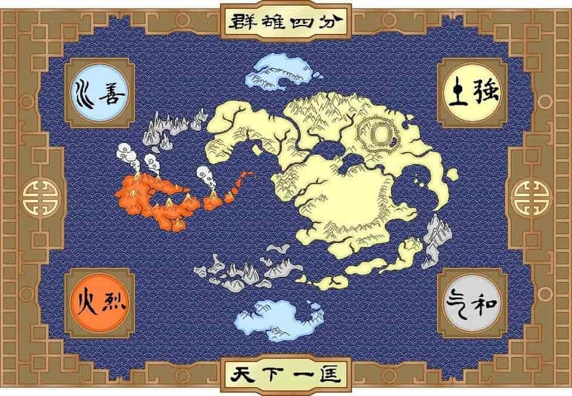

Avatar: The Last Airbender
Backstory
Avatar: The Last Airbender is set in a world which is divided into four nations named after the four main elements. The Water Tribe, the Earth Kingdom, the Fire Nation, and the Air Nomads. Each nation has certain people known as "benders" (for example the water tribe has waterbenders). Where they have the ability to control the element corresponding to their nation. The "Avatar" is the one and only person with the ability to control all of the four elements and their duty is to maintain peace. There is only a single Avatar at a time and once the Avatar dies, they are reincarnated.
Photo of the Four Nations

My Favorite Character: Aang
Aang is the main character of the cartoon and is the Avatar. When he was a kid he ran away from his home, with the Air Nomads, and was caught in a storm
while crossing the ocean and was frozen in an iceberg. After 100 years he is accidentally discovered and revived by 2 Water Nation teenagers, Katara and Sokka. Aang is the last
surviving Air Nomad as the Fire Nation launched a world war to get rid of the Avatar and expand their nation.
The reason Aang is my favorite character is because I grew up
watching this scared little kid turn into a strong mature person and I felt like I could also grow up to be strong.
Photo of Aang